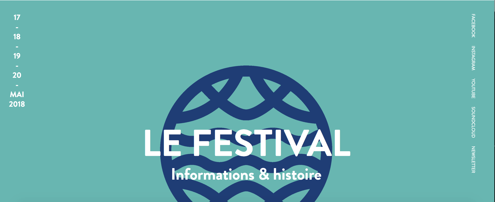

Concurrentie analyse
The futur Indoor
Website: www.welcometothefuture.nl

Positief
- Navigatie menu staat groot en goed leesbaar rechts vanboven;
- Het is een one-page website, dit past in het thema en bij de styl die ze willen neerzetten;
- Ze maken gebruik van zeer veel foto's wat het visueel aantrekkelijk maakt;
- Sociale media is onderaan de pagina groot, direct zichtbaar en werkt direct;
Negatief
- Op de website staat niet welke soort muziek er gespeeld zal worden;
- Er wordt gebruik gemaakt van zeer verschillende stijlen en kleuren;
- Ticket pagina verschild teveel met de rest van de website;
- Sommige tekst is links-align en de meeste tekst is center;
- De hover van info in de menubalk werkt niet;
Herfstdrift festival
Website:www.driftomtedansen.nl

Positief
- Sociale media is direct rechts vanboven terug te vinden en aanwezig op elke pagina
- Ticketoverzicht is simple qua tekst en instructies;
- Het gebruik van de foto's geeft de webiste extra kleur;
Negatief
- Navigatiebalk bevind zich links en is niet zo en valt niet goed op;
- Tekst in de navigatiebalk staat niet altijd juist of over de pictogrammen;
- footer onderaan is te groot voor de rest van de site;
Made festival
Website:www.made-festival.fr


Positief
- Het aanduiden van de locatie op de kaart is kan iedereen goed begrijpen;
- Het contactformulier is correct en gemakkelijk te gebruiken door dat alles aangeduid staat;
Negatief
- De taal van de website kan niet aangepast worden deze is enke in het frans;
- Er is te veel animatie op de website;
- De plaatsing van de tekst verschild te veel wat het vrij gaotisch maakt;